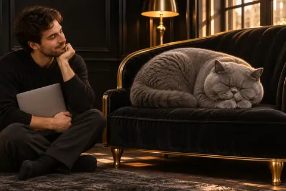

Koci Notatnik / Krótkie opowieści
Kocia rutyna · 2 min czytaniaŚpię kilkanaście godzin. Personel nazywa to brakiem ambicji.
Człowiek spojrzał na mnie i powiedział, że znowu śpię. Tak, kochany. Już trzeci raz przerywasz mi tę samą czynność, a nadal twierdzisz, że to ja niczego nie kończę.

Ile godzin na dobę śpi kot?
Koty domowe często śpią około 12–18 godzin na dobę. Ilość snu zależy m.in. od wieku, aktywności i zdrowia; warto znać zwykły rytm swojego kota.
Kalendarz zapełniony po brzegi
Mój dzień jest zaplanowany. Drzemka poranna, odpoczynek po niej, krótka kontrola miski i regeneracja po kontroli. Człowiek ma kalendarz w telefonie. Ja jestem kalendarzem: gdy leżę na nim, nie ma spotkań.
Wybrałem sobie personel po to, żeby ktoś pracował, kiedy ja odpoczywam. Teraz on robi zdjęcia i podpisuje je: „leniuch”. Zarządzanie wizerunkiem wymaga tu natychmiastowej interwencji.
Próbował obudzić mnie zabawką. Otworzyłem jedno oko. Mina powiedziała wszystko. Piórko wycofało się z negocjacji.
Później wstałem, przeciągnąłem się i zmieniłem poduszkę. Człowiek zaczął się śmiać. Nie rozumie, że to praca w kilku lokalizacjach.
Wieczorem sam zasnął przed telewizorem. Proszę bardzo: u niego to „ciężki dzień”, u mnie „cały dzień leży”. W tym domu nawet odpoczynek ma nierówne warunki zatrudnienia.
Co ma zapamiętać Twój człowiek
- Zapewnij ciche miejsce do spania i nie budź kota dla zdjęcia.
- Zabawę proponuj w jego porach aktywności.
- Nagłą zmianę ilości snu, apatię lub spadek apetytu omów z weterynarzem.